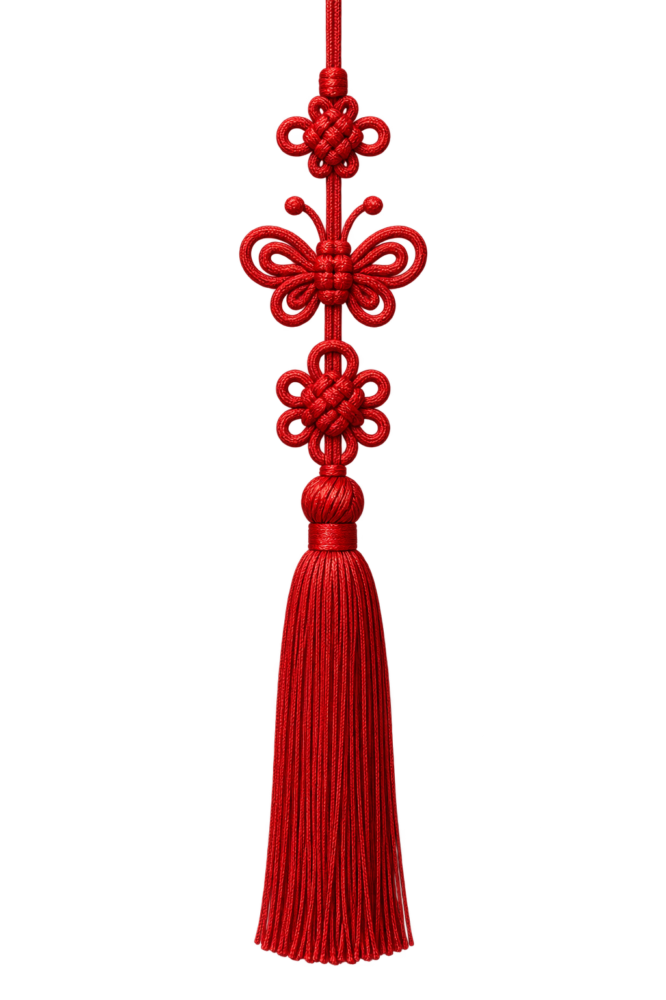
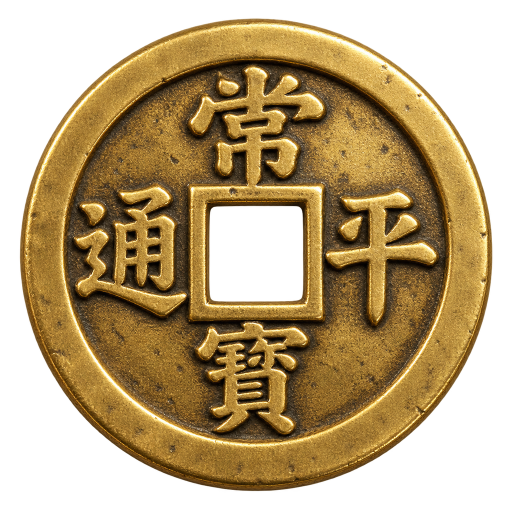
0.65초, 금빛 점이 떨어지고 양쪽 매듭이 흔들리며 들어온다. 판화 궁궐 선이 그려지고, 3.41초에 점이 번쩍, 4.67초에 엽전이 된다.
이음 → ㅡ 막대 (좌→우)제580돌 한글날 · 레진 사극 BL·HL·남성향 주인공과 가·나·다 혜택 · 천지인(· ㅡ ㅣ)이 장면을 잇는다 · v3: 인물·궁궐·매듭·엽전·붓터치는 AI 생성(Codex), 엔딩 액자는 레진 공식 표지 (출처 assets/characters/SOURCES.md)


0.65초, 금빛 점이 떨어지고 양쪽 매듭이 흔들리며 들어온다. 판화 궁궐 선이 그려지고, 3.41초에 점이 번쩍, 4.67초에 엽전이 된다.
이음 → ㅡ 막대 (좌→우)1446 → 2026
제580돌
한글날
5.29초 ㅡ, 7.92초 ㅣ가 엽전을 가른다(· ㅡ ㅣ = 천지인). 9.59초 "1446 → 2026", 10.47초 "제580돌 한글날"이 금빛 광택과 함께 왼쪽 아래에 착지한다.
이음 → 화면 교체 남색→노랑 @13.03역시
한글날엔 → 역시 → 사극
13.42초 "한글날엔"이 화면 가득 쾅 → 15.56초 "역시"(HL 주인공 두 명(흑백)이 글자 뒤에서 '역'과 '시' 사이로 보임 — 글자가 항상 위, '시'는 가리지 않음) → 17.25초 "사극". 한 박에 한 단어, 그런지 질감과 색번짐.
이음 → '극'의 ㅡ가 막대로 @18.11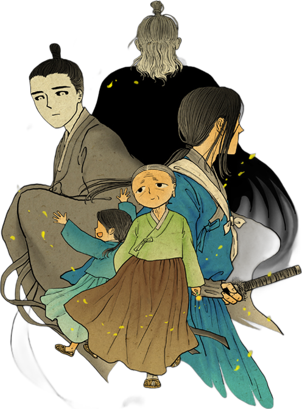
극
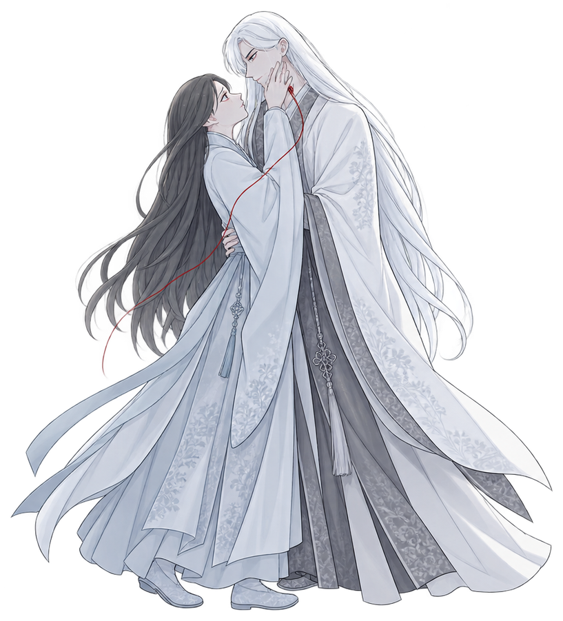
'사'는 시점 이동으로 왼쪽 밖으로 빠진 상태18.11초 '극'의 ㅡ가 화면 끝까지 늘어나며 시점이 좌→우로 이동한다. 막대 앞뒤로 세 작품의 주인공들(흑백 + 색번짐)이 드러나고, 19.06초에 짧게 흔들린다.
이음 → 컷 없이 유지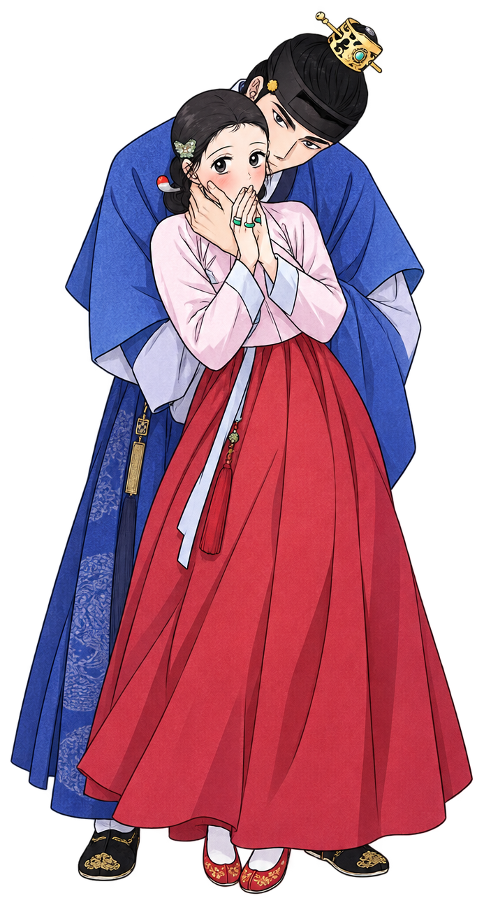
스물여덟 자에 새긴
연모와 칼끝
20.71초 "스물여덟 자에 새긴"이 막대 위에, 23.27초 "연모와 칼끝"이 크게 착지한다. 라인업은 천천히 흐르고, 23–25초 조용한 구간에서 멈춰 읽히게 둔다.
이음 → 먹 붓터치 대각선 와이프 @25.82가
가볍게, 단 1코인예시
25.82초 "가"가 쾅, 먹 붓터치가 대각선으로 지나가고 HL 주인공(하는 중전, 컬러)이 오른쪽에서 들어오고 뒤에는 광안이 흐리게 깔린다. 인트로의 엽전이 "1코인" 옆에 다시 등장한다.
이음 → 팔레트 플립 노랑→주홍 @28.33나
나눠 드려요, 100% 코인백예시
28.33초 바탕이 주홍으로 뒤집히고 남색 패널 위로 BL 주인공(애별리고)이 튀어나온다. "나"는 밝은 글자로 크게.
이음 → 반전 주홍→남색 @31.00다
다 풀었다, 특별편 OPEN예시
31.00초 화면이 남색으로 반전되고 노랑 "다"가 뜬다. 오른쪽에 어둠이 스러지는 꽃의 인물들(남성향 자리 대체). 주홍·노랑 붓이 튄다.
이음 → ㅣ 세로 와이프 @33.532026 한글날
사극 한마당
행사명 예시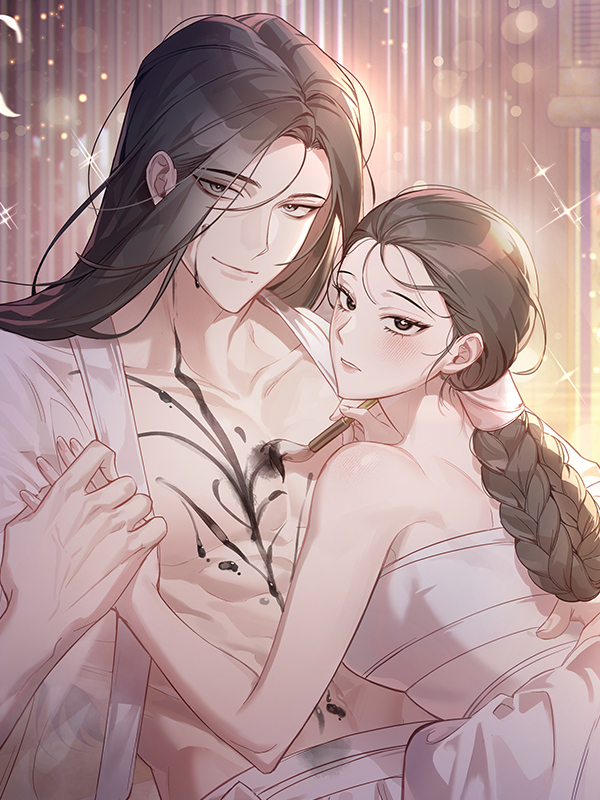
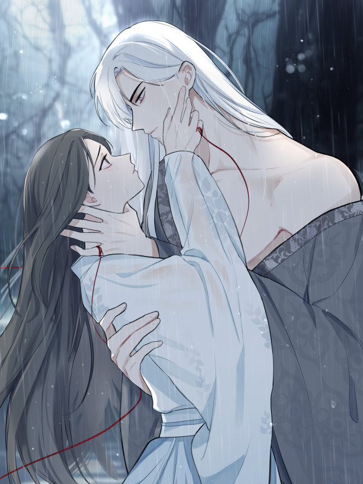
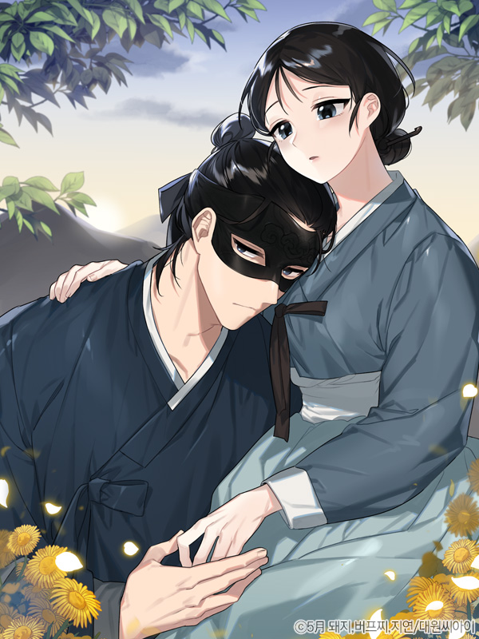
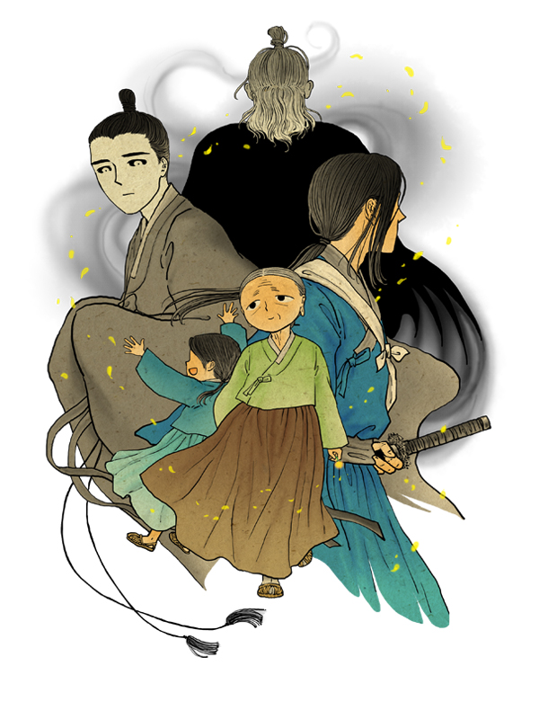
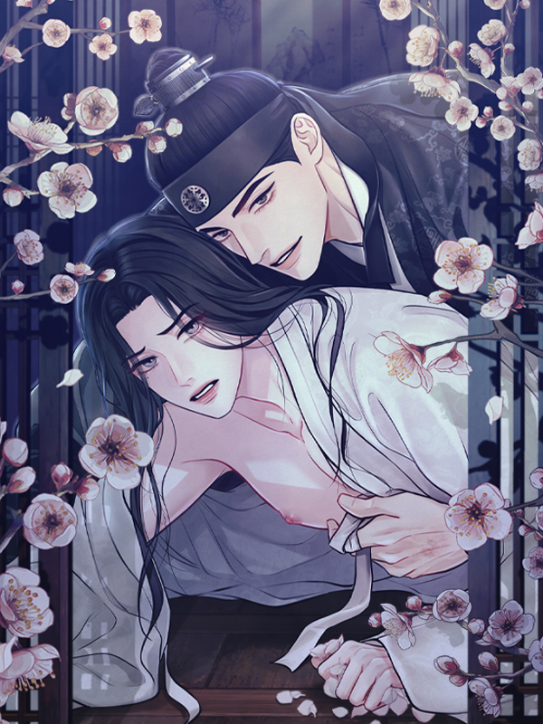
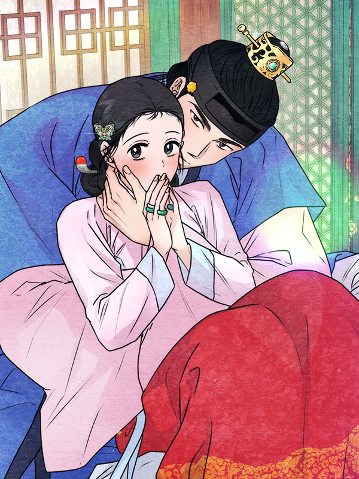
33.53초 ㅣ 세로 와이프로 엔딩이 열리고 33.95초 "사극 한마당"이 쾅. 34.76초와 35.39초에 공식 표지 6장이 담긴 액자가 원근감 있게 아래에서 올라온다.
이음 → 컷 없이 유지2026 한글날
사극 한마당
10.09(금) – 10.11(일)예시
36.04초 날짜가 착지하고, 38.57초 레진 로고가 들어오면 모든 것이 멈춘다. 39–40초 음악이 사라질 때까지 그대로(held frame). 워터마크 없음.
끝 → 정지 화면가나다 Black 900
스물여덟 자에 새긴 · Bold 700
2026 한글날 · SemiBold 600
금지: 가운데 제목 + 그라디언트 · 전부 페이드인 · 모서리 라벨·테두리·워터마크 · UI 글로우 · 흔한 파티클 · 슬라이드쇼 · 의미 없는 움직임. 검정 대신 남색(ink)이 어두운 색.